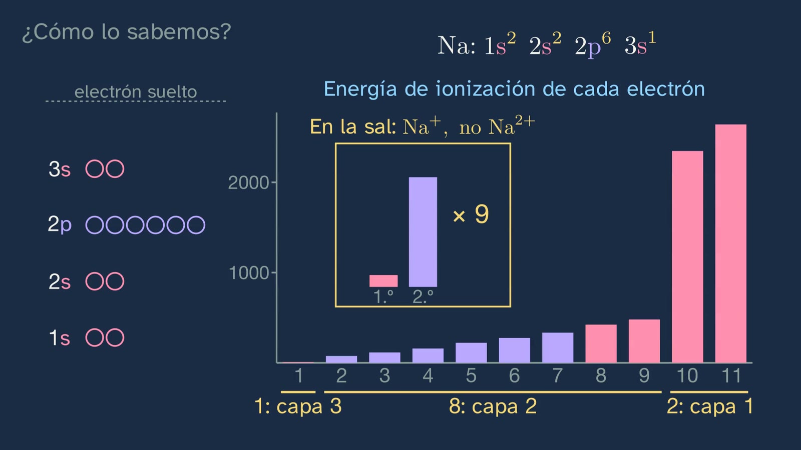

Shells, subshells and the filling order
In a nutshell
This is the class in which the electron configuration is written, and it starts from something students have at home: salt. If the pot boils over, the flame turns yellow, and that light is a jump in an atom with eleven electrons. Class 3 said that the Bohr model only worked with one electron; here we see why, with measured data.
The measured staircase of sodium is shown in full, next to hydrogen's, on the same scale and with levels 1 and 2 past a break in the axis. Level 3 splits into three, and the yellow from the kitchen turns out to be a jump within that level: with one level for each number, it wouldn't exist. That gives shells and subshells, and it also gives the letters: s, p, d and f are what remains of the sharp, principal, diffuse and fundamental lines described by the spectroscopists.
Then, the orbital: a probability cloud, not a path. It is built in front of the student, look by look, and the planets mistake is taken apart with what students already know from class 3. Each subshell has 1, 3, 5 or 7 orbitals, and sodium's staircase is shown with its clouds in place. Each orbital holds two electrons (Pauli, who started from the double lines of this same family): hence spin and the four-part address of each electron: shell, subshell, orbital and spin. And hence the 2, 6, 10 and 14.
With that, the class explains why a level splits (the three clouds of level 3, at the same height in hydrogen; in sodium, +11 − 10 = +1, which is shielding: 3d doesn't get in among the ten inner electrons and stays almost where it was; 3p gets in a little and drops; 3s gets in further, with its small ring, and drops a lot, which is penetration). It then reaches the filling order and the diagonal rule, presented as what it is: a practical rule. Sodium is written in full, chlorine with a gap and potassium alone, and then come the ions, which turn out to be the salt itself.
All of this is tested: the energy needed to pull sodium's electrons off shows its shells (1, 8 and 2), and a photoelectron spectrum reads 2, 2, 6 and 1. The class answers its hook honestly: Bohr's levels stayed and split, and his orbits were thrown out.
For readers outside Spain: the Bachillerato is the last two years of secondary school (ages 16–18). The video is in Spanish, with English subtitles; its on-screen labels keep their Spanish text: capa is shell, nivel is level, subnivel is subshell, escalera is the staircase (the energy level diagram) and peldaño is a step. The voice says that a cloud se cuela, slips in, among the ten inner electrons. In Spain the decimal separator is a comma; this English sheet uses points, and writes powers of ten with × (4.28 × 10⁻¹⁹, which the board writes as 4,28·10⁻¹⁹). Z is the atomic number.
Curriculum
Spain's Royal Decree 243/2022, Physics and Chemistry (consolidated text in the Official State Gazette, BOE). Our translation of the official Spanish text.
- Core knowledge (block A): "Electronic structure of atoms after analysing their interaction with electromagnetic radiation: explanation of the position of an element in the periodic table and of the similarity in the properties of the chemical elements of each group."
- Specific competences: SC1 (explaining everyday phenomena with laws and theories), SC2 (formulating hypotheses and validating them through the search for evidence) and SC3 (interpreting information in different formats, such as configurations, energy staircases and graphs).
- Assessment criteria:
- 1.1: the colour of the flame with salt, explained with subshells.
- 2.1: predicting where the jumps will be when electrons are pulled off, and checking it.
- 2.2: two methods for the same question: successive ionisation energies and the photoelectron spectrum.
- 2.3: integrating theory into validation: the configuration predicts the jumps.
- 3.3: reading and writing configurations and energy staircases.
How the class is built
Video chapters
About twenty-five minutes (24:46), in fifteen chapters. It follows the department's model: predict, observe and explain. There is one thread, kitchen salt, which connects the hook, the examples (sodium and chlorine), the ions and the test.
| Chapter | What happens | Why this way |
|---|---|---|
| What we'll see (0:00) | Abril says hello; the map of the topic. | To place the class. |
| What you already know (0:22) | What did the Bohr model calculate well? The lines of hydrogen, and only with one electron. | To recall what is improved today. |
| Solutions to the previous class (0:48) | The three strips, mercury's photon and why red leaves at a wider angle. | Brief, with their question on screen. |
| The salt in your kitchen (1:50) | Bohr fails as soon as there is more than one electron: do we throw him out or improve him? The yellow flame from salt is a jump in an atom with eleven. Prediction: will its staircase be the same as hydrogen's? | A phenomenon they already know (class 2), with a question they can't yet answer. |
| One level, several subshells (2:32) | The two full staircases, measured and on the same scale, with levels 1 and 2 past a break in the axis. Level 3 splits into three, level 4 into four, and the yellow is a jump within level 3. Shells and subshells. | What nobody tells you: the subshell can be seen in a kitchen phenomenon. |
| Why s, p, d and f (4:28) | Each line is a jump, an arrow on the staircase. The arrows of a series all start from the same column, and that column kept its initial. | The letters stop being arbitrary and tie the class to light, as the core knowledge requires. |
| Not an orbit, an orbital (5:41) | From orbit to wave (the guitar string, where the levels come from); the cloud, look by look; the planets mistake, taken apart with class 3; 1s, 2s and 3s; the three p orbitals, each in its direction and with its plane; the pyramid of 1, 3, 5 and 7; sodium's staircase, with its clouds. | Not even 1, 3, 5 and 7 are given as dogma: the class says where they come from and that they will be seen in year 2. |
| Pauli, spin and the four pieces of data (8:46) | Two at most in each orbital; the double lines; spin; each electron's address (shell, subshell, orbital and spin); 2, 6, 10 and 14, and shells of 2, 8, 18 and 32. | The 2 is not a dogma, and the step to year 2's quantum numbers is prepared. |
| Why a level splits (11:29) | The three clouds of level 3, at the same height in hydrogen. The ten inner electrons, a small cloud with their shells 1 and 2, cover the nucleus: +11 − 10 = +1 (shielding). Out of every thousand looks, almost none of the 3d's fall among them, about six of the 3p's and about fifteen of the 3s's, because of its small ring, and each cloud drops according to how far it slips in (penetration). The 4s ends up below the 3d. | The filling order is understood before it is memorised. |
| The filling order (14:01) | Why atoms fill from the bottom and why sodium's electron doesn't fall to level 1; the diagonal rule; the notation. | The step that books tend to take for granted. |
| Writing configurations (15:44) | Sodium in full, chlorine with a gap and potassium alone, with the mistake about electron 19 and its measured staircase. Sodium and potassium, one family. | Worked examples that are gradually withdrawn (article 14). The promise from class 3 is kept. |
| Ions (18:09) | Na⁺, Cl⁻ and O²⁻, with the mistake about the sign. Salt is two of them. | The thread returns. |
| How do we know? (19:16) | Pulling off electrons, with a prediction: 1, 8 and 2. The four peaks: 2, 2, 6 and 1. | What is written, tested with data. |
| A rule, not a law (21:43) | The table, in green and orange: the rule gets 83 of 103 elements right. What stayed and what went from the Bohr model. | The hook is answered; models, with their limits (article 15). |
| Practice and more to think about (22:39) | Summary, three exercises and the open question: do orbitals really exist? | The open question, with both positions and their best argument (article 9). |



A plan for a 50-minute lesson
- Before the video (5 min). The questions in "Before watching the video" on the student sheet.
- The video, in sections (28 min). Pause at each prediction (1:59, 19:16), at "The key point so far" (11:21) and at each example (16:27, 16:56).
- The activity (12 min). "The electron that gets pulled off" (see "A classroom activity").
- Wrap-up (5 min). The three exercises and the open question, for homework.
What the class simplifies, and why
- Sodium's staircase. It is the staircase of its last electron: each level, with the other ten staying put. 3p and 3d are really pairs of levels very close together (the two lines of the yellow are the two of 3p, at 2.1023 and 2.1044 eV); they are drawn as one, at their average.
- "Splits". It is the term used in books: the splitting of levels. Nothing moves when going from hydrogen to sodium: they are two different atoms. In hydrogen, the subshells of a shell have almost the same energy; the difference is a hundred-thousandth of an electronvolt.
- "Last electron". It is sodium's valence electron; the class gives the name once and carries on with "last", which is clearer when filling. In iron and other metals, the last one in is not the first one out.
- "Step" and "level". The step is the image from class 3: the class says once that each step is an energy level and carries on with "level". "Staircase" is the colloquial name for the energy level diagram.
- The staircase, with a broken axis. Above 3s, the two atoms are on the same scale. Below that it doesn't fit (−13.6 eV in hydrogen; 2p −38, 2s −71 and 1s −1079 eV in sodium): the order is real and the heights are not.
- Looking at the same atom. It is a thought experiment, which is why it starts with "imagine" and says "a while later": each real measurement changes the state of the electron, which takes time to return to its orbital, and what is really measured is many atoms prepared in the same way. What matters is that the orbital refers to one electron, not to a collection of electrons.
- "+11 − 10 = +1". This is the idea of shielding, without a numerical effective charge. The clouds in the class are hydrogen orbitals, with the centre magnified. With the calculation done using those shapes and the potential of the ten electrons (Hartree-Fock, without exchange), 3d barely moves (−1.51 eV), 3p drops to −1.59 and 3s to −3.01; the measured values are −1.52, −3.04 and −5.14 eV: the class gives the order, not the values.
- Each series, from one type of subshell. In sodium, sharp: ns → 3p; principal: np → 3s; diffuse: nd → 3p; fundamental: nf → 3d. The letters were already in use as abbreviations of the series, and Hund used them for subshells in 1927 (Jensen, 2007, the only source giving that page, which is why it isn't said in the video). None of this has anything to do with the shape of the orbitals.
- The Pauli principle and spin. The class gives both forms: two electrons per orbital, in short, and then no pair with the same four-part address. The January 1925 paper speaks of four quantum numbers; the fourth was a "two-valuedness not describable classically", which Uhlenbeck and Goudsmit identified with spin in a letter of 17 October 1925. The arrow is a convention: the electron does not spin like a top.
- The cloud of the ten electrons. These are the electrons of shells 1 and 2, drawn with hydrogen orbitals and the Clementi and Raimondi effective charges. Its dashed edge is at 1.5 Bohr radii, where 95% of those electrons lie in a Hartree-Fock calculation of Na⁺. The class's figures come from hydrogen orbitals: 13.9, 6.1 and 0.08 looks per thousand. With sodium's real orbitals, 16.9, 5.5 and 0.14: the order and the round figures hold. "Feels almost +11" only applies very close to the nucleus: +10.2 at 0.1 Bohr radii and +3 at 1. The three rings drawn are those of hydrogen's 3s, at 0.74, 4.2 and 13 Bohr radii: 3s has two radial nodes, 3p one and 3d none. In real sodium, 3s is more contracted and its rings lie closer to the nucleus; that is why the class says "of the same type", not "the same". Shielding and penetration are named once only: they are not required.
- The orbitals. They are hydrogen's, with one electron. In an atom with several, "an electron in an orbital" is an approximation: it is one of the arguments in the open question.
- The bars. Only the 1st, 2nd and 5th energies from NIST are experimental; the others are semi-empirical or theoretical, and very precise. That is why the label says "some measured, others calculated".
- The peaks. It is a drawing with energies measured in free atoms. The real areas do not give 2, 2, 6 and 1 without correction: with Al Kα X-rays, the 1s peak comes out about 20 times larger than the 2s, because some subshells give up electrons far more easily than others (the cross section). In addition, 2p and 2s split (about 0.4 eV) because of the 3s electron, and 1s has a satellite. The horizontal axis is the energy the electron arrives with, which grows to the right; so binding energy grows to the left, as in real spectra.
- 4s and 3d. In potassium and calcium, 4s lies lower. From scandium on, the data indicate that 3d lies below 4s (Scerri, 2013), even though the overall configuration comes out right; and that is why transition metals lose their 4s electrons first (Fe²⁺ is [Ar] 3d⁶). The class says this in one sentence and does not require it.
Typical mistakes and how they are handled
- "Electrons go round like planets." Going round, they would give off light and fall into the nucleus (class 3). The orbital is a probability cloud: as long as the electron doesn't change level, it gives off no light.
- "Each dot in the cloud is an electron." Each dot is a look.
- "Potassium's electron 19 goes to shell 3, because it still has room." The diagonals say 4s, and so does the measured staircase: 3d lies 4.28 × 10⁻¹⁹ J higher.
- "The Na⁺ ion has one more electron." It has one fewer: 11 protons and 10 electrons remain.
Questions and solutions
The ones in the video
- What did the Bohr model calculate well? — The lines of hydrogen.
- Will sodium's staircase be the same as hydrogen's? — No: each level splits.
- Chlorine, Z = 17: how many electrons go in 3p? — Five: up to 3s there are 12.
- Potassium, Z = 19. — 1s² 2s² 2p⁶ 3s² 3p⁶ 4s¹.
- Where will the big jumps be when sodium's electrons are pulled off? — After the first and after the ninth: 1, 8 and 2.
- What makes the second cost so much more? — The first was alone in shell 3; the second comes out of shell 2, much closer to the nucleus.
Practice (the solutions open class 6)
- Calcium (Z = 20) and Ca²⁺. — Ca: 1s² 2s² 2p⁶ 3s² 3p⁶ 4s². Ca²⁺ loses the two from 4s: 1s² 2s² 2p⁶ 3s² 3p⁶, with 18 electrons.
- S²⁻ (Z = 16). — S: 1s² 2s² 2p⁶ 3s² 3p⁴. S²⁻ gains two: 1s² 2s² 2p⁶ 3s² 3p⁶, with 18 electrons.
- Which element is 1s² 2s¹? What does it have in common with sodium and potassium? — It has three electrons: it is lithium. All three end with a single electron in their last shell, and they belong to the same family.
The open question. Do orbitals really exist? For: it would be a miracle for something unreal to get so many measurements right, and Stodolna et al. (2013) saw the rings of the cloud of excited hydrogen. Against: Bohr's orbits got things right too and were abandoned, and an orbital is strictly a function of one electron: with several, it is a computational approximation, and what is measured is the electron density (Scerri, 2000). This is the scientific realism debate, and it is worth a session with the Philosophy department.
A classroom activity
The electron that gets pulled off. Each group is given the table of successive ionisation energies of another element, without being told which (magnesium and aluminium work well): they have to draw the bars, find the jumps and work out how many electrons are in each shell and which element it is. The data are in the NIST database, and it is worth pointing out that some are measured and others calculated.
Another option. With the NIST list, check the diagonal rule for the first 36 elements and find the two exceptions (chromium and copper).
Open resources
- NIST Atomic Spectra Database, ionisation energies: https://physics.nist.gov/PhysRefData/ASD/ionEnergy.html
- NIST, energy levels: the staircase of any atom, free of charge. https://physics.nist.gov/PhysRefData/ASD/levels_form.html
- Scerri, "The trouble with the aufbau principle" (RSC): https://edu.rsc.org/feature/the-trouble-with-the-aufbau-principle/2000133.article
- Pauli, Nobel lecture: https://www.nobelprize.org/uploads/2018/06/pauli-lecture.pdf
- Smeenk (2013), "A New Look at the Hydrogen Wave Function", Physics 6, 58: https://physics.aps.org/articles/v6/58
What the class leaves out, and why
- The values of the quantum numbers (n, l, m and s, and their rules), Hund's rule, Heisenberg, De Broglie and the photoelectric effect. The decree places them in year 2 Chemistry and Physics, and none of the six regions we compared requires them in year 1. The class names the four pieces of data and spin, because they are needed to state the exclusion principle properly, but it does not teach their values: they need not be assessed.
- The formula 2n² for how many electrons fit in a shell: it isn't needed to write any configuration. In the class the subshells are added up (2, 8, 18 and 32).
- Noble-gas abbreviations, like [Ne] 3s¹ or [Ar] 4s¹, which many books use: they can be introduced in class with the exercises.
- The exceptions: chromium is [Ar] 3d⁵ 4s¹ and copper, [Ar] 3d¹⁰ 4s¹. They are 20 of the 103 elements with data in NIST.
- The name "Aufbau principle": what the class calls filling from the bottom.
- Shells as electron density. Anyone who wants to go further can draw sodium's radial density, with its three humps.
Sources
- NIST Atomic Spectra Database: levels of Na I, Na II and K I, configurations and ionisation energies (31/10/2026). The level tables go back to those of Charlotte Moore, Atomic Energy Levels (1949).
- G. D. Liveing and J. Dewar (1879), "On the Spectra of Sodium and Potassium", Proc. R. Soc. 29, 398–402; J. R. Rydberg (1890), Phil. Mag. 29, 331–337; W. B. Jensen (2007), "The Origin of the s, p, d, f Orbital Labels", J. Chem. Educ. 84(5), 757–758, doi:10.1021/ed084p757.
- E. Schrödinger (1926), Annalen der Physik 79, 361–376; M. Born (1926), Zeitschrift für Physik 37, 863–867.
- W. Pauli (1925), Zeitschrift für Physik 31, 765–783, and his Nobel lecture.
- E. Scerri (2013), "The trouble with the aufbau principle", Education in Chemistry, RSC.
- Martin et al. (1978), J. Chem. Phys. 68, 5006–5009, doi:10.1063/1.435615; Banna et al. (1978), J. Chem. Phys. 68, 5459–5466, doi:10.1063/1.435723.
- A. S. Stodolna et al. (2013), Physical Review Letters 110, 213001, doi:10.1103/PhysRevLett.110.213001; C. T. L. Smeenk (2013), Physics 6, 58; E. R. Scerri (2000), "Have Orbitals Really Been Observed?", J. Chem. Educ. 77, 1492–1494.
About this class
Script written by Claude (Anthropic), checked in two sources by a separate agent and reviewed with the channel's rubric. Whiteboard with Manim; synthetic voice from Microsoft Azure. The clouds are calculated with orbitales.py; the photo of the flame, from Wikimedia Commons, with its licence on screen and in the description. This English version was translated by the same AI and reviewed by a person.
How to cite this sheet
GinCol Lab (2026). Shells, subshells and the filling order. GinCol Lab teacher sheet: Physics and Chemistry · 1st year of Bachillerato · The atom and the periodic table · Class 5 of 6. https://gincollab.github.io/aula/en/fisica-y-quimica/t01-c5/. CC BY 4.0.
GinCol Lab teacher sheet · CC BY 4.0 · Source and errata